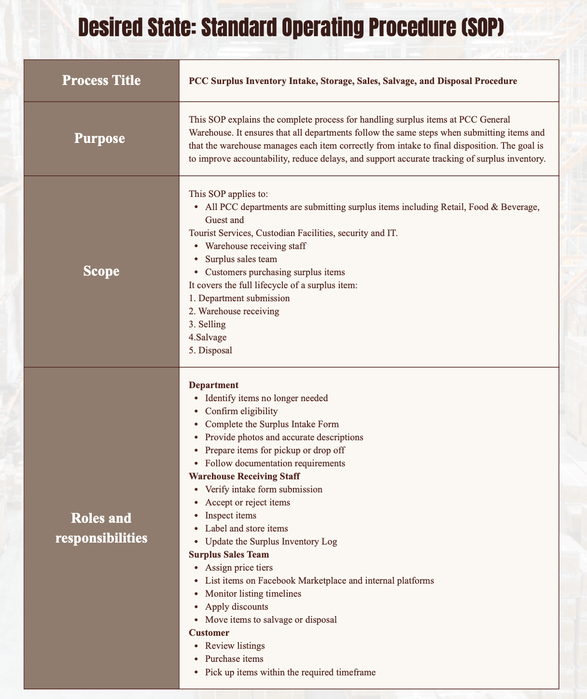
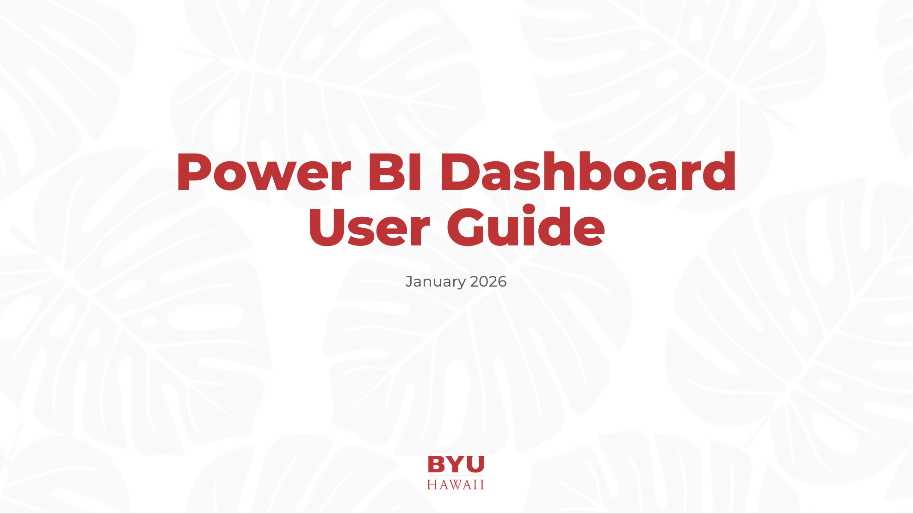
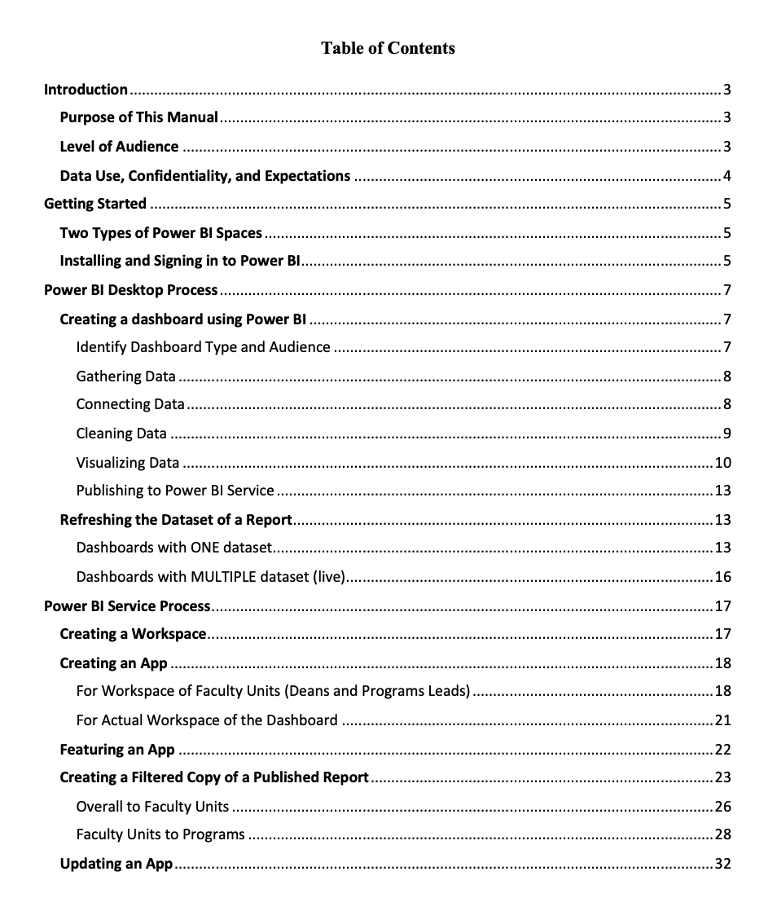

Case Study
Operations Documentation
A set of standard operating procedures for recurring operations tasks that everyone had been doing a little differently, written so someone new could follow them without extra help.
Overview
Recurring tasks were being done differently depending on who was doing them, with no written reference to check against. I prioritized which tasks to document first by asking which ones caused the most repeated questions, shadowed each task as it was actually done, wrote the steps as observed, and had someone unfamiliar with the task test the SOP before finalizing it.
That testing step mattered more than expected — it consistently surfaced steps the original task owner had considered "obvious" and left out, which were exactly what a newcomer needed most.
Screenshots


